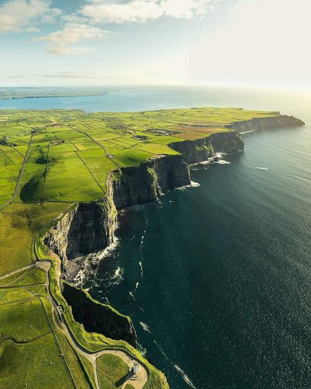
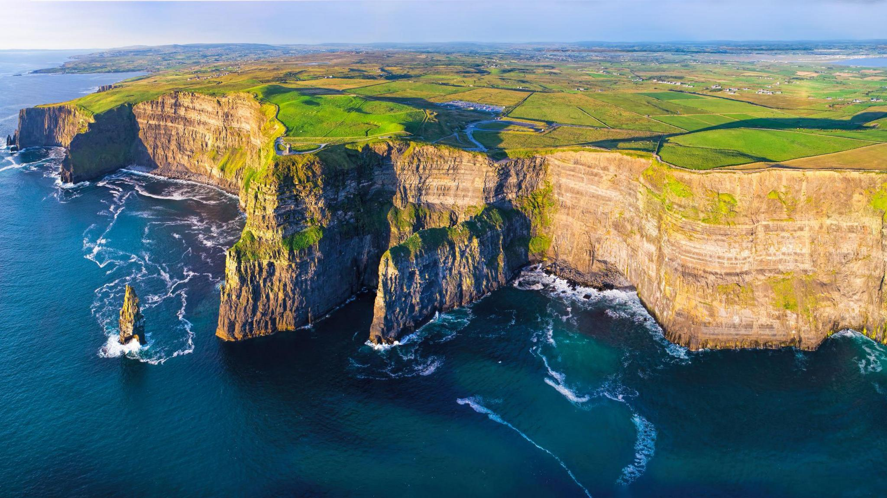
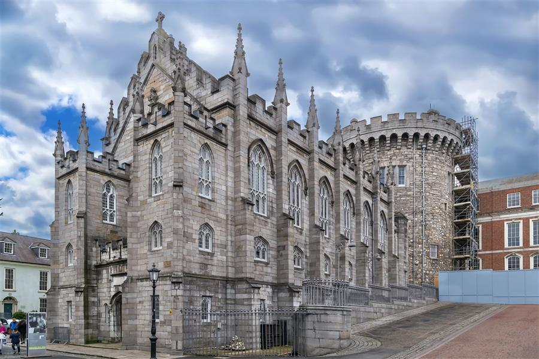
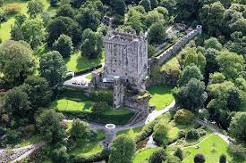
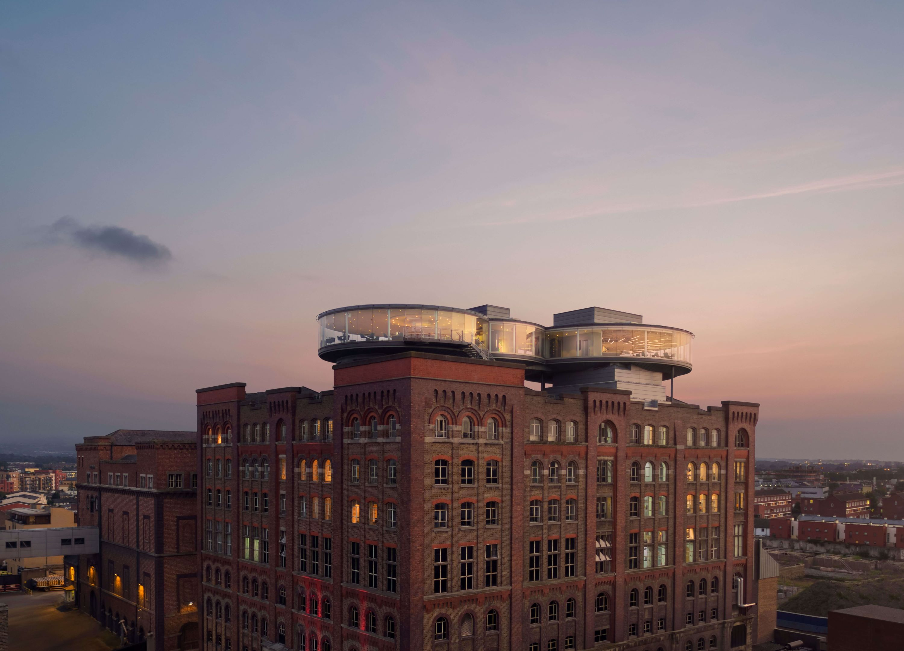
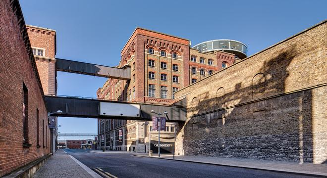
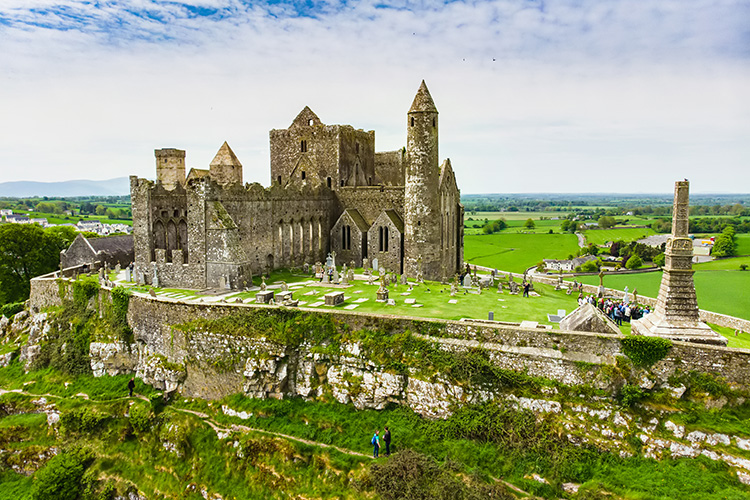
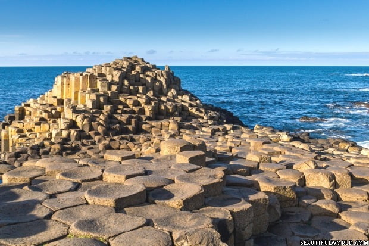
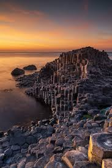

Cliffs of Moher


Rising dramatically from the Atlantic, the Cliffs of Moher are a breathtaking testament to nature’s power and beauty. Waves crash
against rugged rock faces while seabirds dance in the wind, painting a scene both wild and serene. Stroll along the cliff paths and
feel the thrill of standing on the edge of the world, where sky and sea meet in endless horizon. A must-visit for any traveler, the
Cliffs of Moher are more than a landscape—they are an awe-inspiring journey into Ireland’s raw, untamed soul.
Best time to visit:
Early morning or late afternoon for softer light and fewer crowds; avoid stormy or foggy weather for best views.
Opening hours:
Daily, 9:00–19:00 (varies slightly by season).
Entry:
Ticket required for the Visitor Centre and access to some paths (€10 for adults; children under 16 free).
SEE MAP
Dublin Castle


At the heart of Ireland’s vibrant capital, Dublin Castle stands as a living chronicle of centuries past. From medieval fortifications
to elegant state apartments, every hall and courtyard tells stories of kings, battles, and historic events that shaped the nation.
Strolling through its courtyards, visitors feel the pulse of history mingling with the energy of modern Dublin. A must-visit for
travelers, Dublin Castle is more than a landmark—it is a journey through Ireland’s rich heritage.
Best time to visit:
Morning or early afternoon to avoid crowds and enjoy the state apartments in peace.
Opening hours:
Daily, 9:45–17:45 (last entry 17:15; closed on some holidays).
Entry:
Ticket required for guided tours of the State Apartments (€12–€15 for adults; discounts for students and children).
SEE MAP
Blarney Castle, County Cork


Rising proudly amidst lush gardens and ancient stone walls, Blarney Castle is a treasure of Ireland’s history and legend. Visitors
flock to kiss the famous Blarney Stone, said to bestow the gift of eloquence, while winding paths reveal enchanting gardens, hidden
grottos, and timeless charm. A must-visit for travelers, Blarney Castle is more than a fortress—it is a magical journey where history,
myth, and the beauty of County Cork intertwine in every stone and blossom.
Best time to visit:
Morning or early afternoon to enjoy the gardens and avoid large tour groups.
Opening hours:
Daily, 9:00–17:00 (last entry 16:30).
Entry:
Ticket required (€18–€20 for adults; discounts for children and students).
SEE MAP
Guinness Storehouse, Dublin


Step into the world of Ireland’s most iconic brew, where the rich aroma of roasted barley and the dark, velvety pint tell stories of tradition,
craftsmanship, and a passion that has spanned over two and a half centuries. From interactive exhibits that reveal the art of brewing to the
breathtaking 360-degree views of Dublin from the Gravity Bar, every corner immerses visitors in the living legacy of Arthur Guinness. Here, you don't
just learn how the legendary stout is made—you feel its spirit through multimedia displays, tasting experiences, and the very walls that echo with
Irish pride. A must-visit for travelers, the Storehouse is more than a brewery—it is a celebration of Irish culture, innovation, and the timeless
joy of sharing a perfect pint in the place where it all began, leaving every visitor with a deeper appreciation for Ireland’s liquid treasure.
Best time to visit:
Late morning or early afternoon to avoid peak crowds and enjoy the tasting experience.
Opening hours:
Daily, 9:30–19:00 (last admission 17:00).
Entry:
Ticket required (€25–€30 for adults; discounts for students and children).
SEE MAP
Rock of Cashel, County Tipperary


Perched majestically atop a limestone hill, the Rock of Cashel commands the Irish landscape with centuries of history, legend, and an aura of
ancient royalty that was once the seat of kings of Munster. Its striking silhouette—featuring a round tower, Cormac's Chapel with rare medieval
frescoes, and a grand cathedral—whispers tales of saints like St. Patrick, Viking raids, and epic events that shaped the nation's spiritual and
political identity. Stroll among weathered stones and Celtic crosses, feel the echoes of royal ceremonies and sacred rituals in the wind, and gaze
over the golden 'Golden Vale' countryside stretching below. A must-visit for travelers, the Rock of Cashel is more than a landmark—it is a powerful
journey through Ireland’s heart.
Best time to visit:
Morning or late afternoon to avoid crowds and enjoy golden light on the medieval structures.
Opening hours:
Daily, 9:00–17:30 (longer in summer; last entry slightly earlier).
Entry:
Ticket required for access to the site (€8–€10 for adults; children usually free).
SEE MAP
Giant’s Causeway, County Antrim


A mesmerizing spectacle of nature’s architecture, the Giant’s Causeway is a landscape of interlocking basalt columns that seem to rise straight
from the sea, formed over 60 million years by volcanic fury and cooled into perfect hexagonal stepping stones. Legends speak of giants like Finn
McCool crossing these stones to confront rival giants in Scotland, while the crashing waves and winds sculpt a scene both dramatic and serene against
the rugged Antrim coast. Wander along the geometric pathways, feel the Atlantic breeze whisper ancient Gaelic tales, and marvel at this UNESCO
World Heritage marvel where science and folklore intertwine. A must-visit for travelers, the Giant’s Causeway is more than a geological wonder.
Best time to visit:
Early morning or late afternoon for softer light and fewer tourists.
Opening hours:
Daily, 9:00–18:00 (longer in summer; visitor center may close earlier).
Entry:
The natural site is free to explore; the visitor center has an entry fee (£13–£15 for adults).
SEE MAP